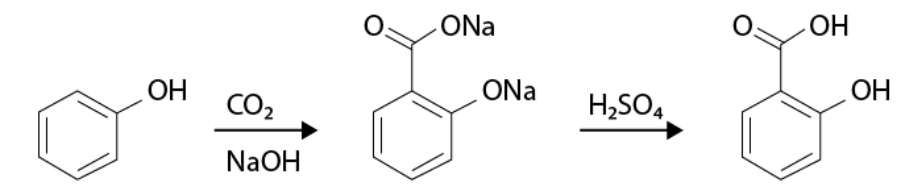
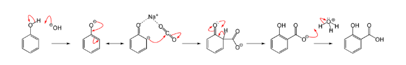

The Kolbe reaction (Kolbe–Schmitt reaction) is the carboxylation of phenoxide ion with carbon dioxide under pressure and heat to form salicylic acid after acidification.

1. Formation of sodium phenoxide from phenol.
2. Electrophilic attack of CO2 at ortho position of phenoxide ion.
3. Formation of sodium salicylate.
4. Acidification to yield salicylic acid.
